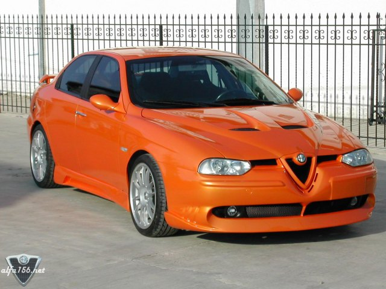
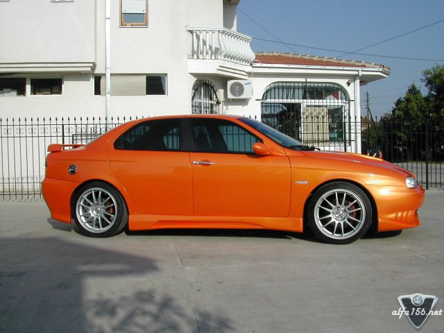
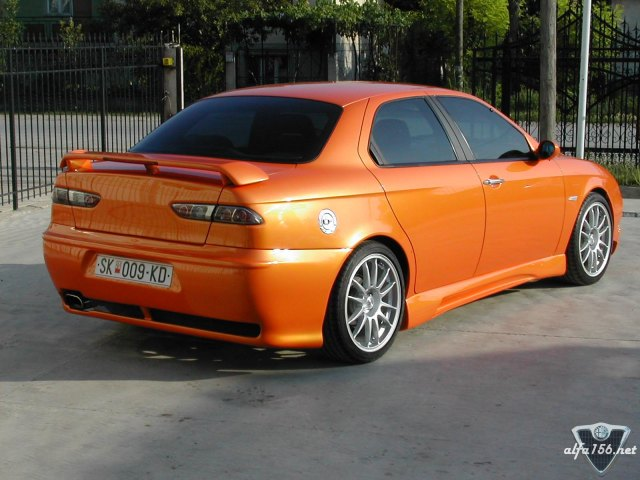
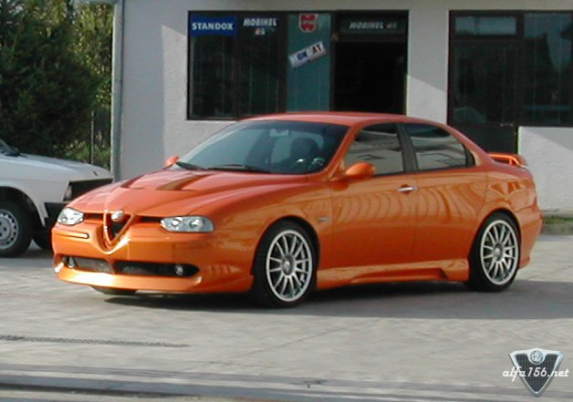

98' 2.0 t.s.
Engine: Ported and polished head with enlarged intake and exhaust ports, custom valve springs.
Re-worked injection inlet. Fully balanced bottom (crankshaft, pistons and conrods). Custom differential
on standard gearbox (So it can stand abuse with big rubber 225/40-18). De-cat, supersprint center section and
n.s. racing rear box. BMC Carbon Dynamic Airbox, Splitfire Triple Platinum spark plugs, custom air flow meter,
akimoto racing various hoses..etc..
Chassis:Hoermann motorsport yellow koni's with hoermann springs, momo upper strut brace, 18x8 OZ Superleggera
racing silver with 225/40 Bridgestone Potenza S-03, Braking: Tarox G88 Discs with tarox pads front, standard discs
with ferodo pads rear.
Body: Autodelta front bumper insert moulded onto original bumper, ATC Italdesign Hood and Sideskirts, Zender rear
wing, custom rear bumper. Flared arches, de-badged rear, sparco fuel filler kit, shaved arial, everything colour
coded and de-chromed, white side repeaters, lexus rear lights, Complete re-spray in Lamborghini Orange Mica using
Standox paint(original colour was proteo rosso)
Interior: Momo carbon handbrake, Momo carbon gearshift, Isotta alu gearshift surround, sparco pedals w/ momo
alu-footrest, Autometer monster tacho, Recaro SR bucket seats.
Ice: Jbl 2ch amp, Mtx 4ch amp, Jvc sh77 headunit, Mtx components front, Mtx 2-way back, Jbl 12 sub, condenser etc..
Owned by Goce Trpkov, located in Macedonia.



![[Prev]](bw_prev.gif)
![[Index]](bw_index.gif)
![[Next]](bw_next.gif)